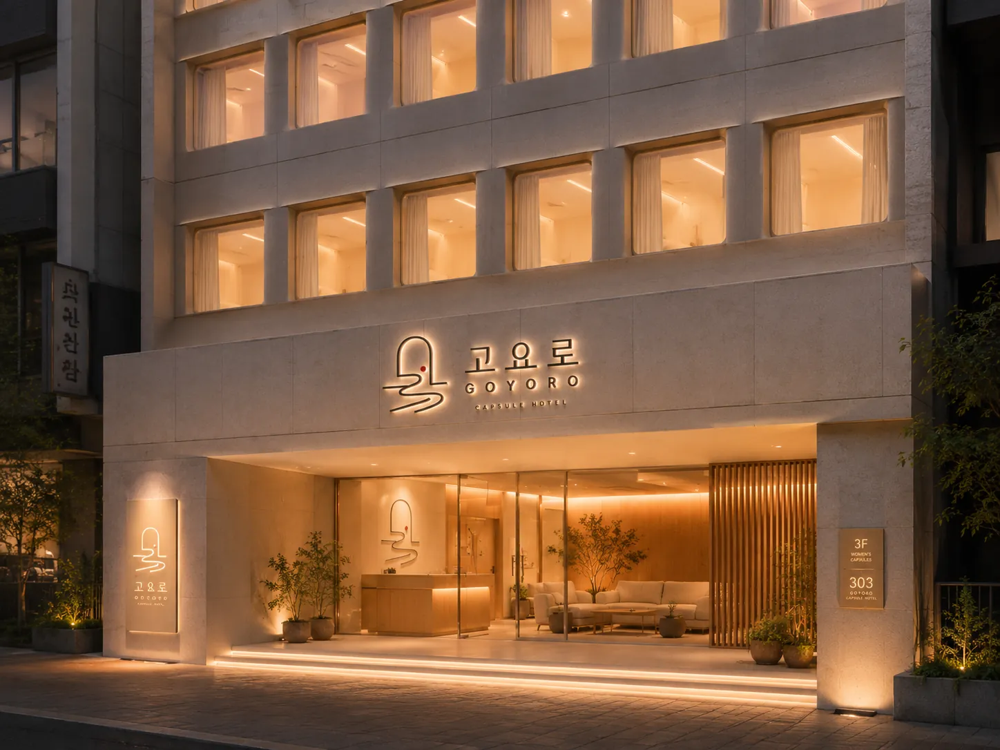

Location
고요로 1호점,
오픈 예정입니다
지점 위치는 아직 공개 전입니다. 지금은 조건이 맞는 건물을 찾고 있는 단계이며, 주소가 확정되는 대로 이 페이지에서 가장 먼저 안내하겠습니다.

위치와 오픈일은 확정되는 대로 공개합니다.
Site Criteria
자리를 고를 때
우리가 보는 것
임대료보다 먼저 보는 것이 밤길입니다. 캡슐호텔은 객실 안에 아무것도 없기 때문에, 건물 밖이 곧 부대시설이 됩니다. 그래서 다음 네 가지를 기준으로 자리를 찾고 있습니다.
- 교통
- 지하철역에서 걸어서 7분 안쪽. 심야버스나 택시 승하차가 가능한 도로에 접해 있을 것.
- 야간 보행
- 밤 11시에 혼자 걸어도 괜찮은 길인가. 보행로 조도와 유동인구를 직접 확인합니다.
- 생활 인프라
- 편의점, 24시간 식당, 약국이 가까울 것. 늦게 도착해도 끼니를 해결할 수 있어야 합니다.
- 수요의 다양성
- 주말에만 붐비는 상권은 평일이 비어 있습니다. 관광·업무·공연·의료·대학처럼 성격이 다른 방문 이유가 겹치는 곳을 우선합니다.
Areas Under Review
검토 중인 권역
아래는 1호점 후보로 살펴보고 있는 서울 도심 권역입니다. 아직 어느 곳도 확정되지 않았으며, 실제 건물의 조건에 따라 달라질 수 있습니다.
- 명동 · 을지로 · 충무로관광 · 업무 · 면세 · 공연 수요가 겹치는 도심 중심
- 홍대 · 합정 · 연남1인 여행객이 많고 심야 교통이 좋은 지역
- 동대문 · 신당야간 상권과 장기 체류 수요가 함께 있는 지역
- 강남 · 논현 · 역삼업무 · 의료 · 미용 수요로 평일이 강한 지역
- 신촌 · 이대 · 서대문대학과 병원, 주거가 섞인 지역
- 성수 · 건대 · 왕십리관광 · 대학 · 공연 수요가 성장 중인 지역
권역 목록은 검토 현황이며 개점을 확정한 지역이 아닙니다. 확정 시점에 정확한 주소와 오픈일을 이 페이지와 오픈 알림 메일로 안내드립니다.
Plan
1호점은 이렇게 준비하고 있습니다
건물 찾기
숙박업 신고가 살아 있고, 층별로 캡슐존을 다시 나눌 수 있으며, 피난과 소방을 제대로 갖출 수 있는 건물만 검토합니다. 조건 하나라도 맞지 않으면 아무리 좋은 자리여도 넘어갑니다.
실사와 설계
구조·소방·설비 전문가와 함께 현장을 확인하고, 피난 동선을 먼저 그린 다음 남은 면적에 유닛을 배치합니다. 유닛 수보다 피난이 우선입니다.
전환 공사
인허가와 소방 협의를 먼저 마치고 공사에 들어갑니다. 캡슐은 공장에서 미리 만들어 현장에서 조립하기 때문에, 소음과 공사 기간을 함께 줄일 수 있습니다.
오픈
채용과 교육, 시스템 세팅과 모의훈련을 마친 뒤 소프트 오픈으로 시작합니다. 사전 예약은 오픈 전에 열리며, 오픈 알림을 신청해 주신 분들께 가장 먼저 안내드립니다.
Contact
문의
오픈 일정, 단체 예약, 제휴와 관련한 문의는 아래로 보내 주시면 확인 후 답변드리겠습니다.
- 예약 · 일반hello@goyoro.kr
- 단체 · 기업group@goyoro.kr
- 제휴 · 입점partner@goyoro.kr
- 운영(주)블랭크 · 대표 최시준
Opening Soon
오픈하면 가장 먼저 알려 드릴까요
이름과 연락처만 남겨 주시면 1호점 위치와 오픈일, 사전 예약 소식을 순서대로 보내 드립니다.